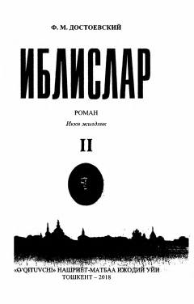

I2Fedor Dostoyevskiyning mashhur «Iblislar» romanining ikkinchi jildi.
Fedor Dostoyevskiyning mashhur «Iblislar» romanining ikkinchi jildi bo'lib, unda voqealar yanada keskinlashadi va jamiyatdagi siyosiy hamda axloqiy ziddiyatlar ochib beriladi. Asar muallifning o'tkir psixologik tahlillari va ijtimoiy-falsafiy g'oyalari bilan ajralib turadi. O'zbek tiliga Ibrohim G'afurov tomonidan tarjima qilingan.